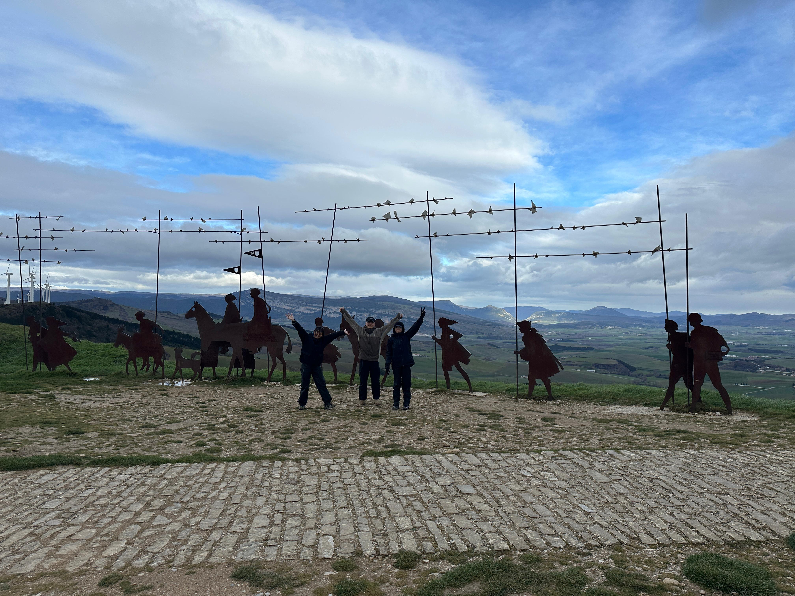

“처음이라 모든 게 막막해요.”
순례길 초보라 정보 수집부터 숙소 예약까지 부담스러운 분들. 설명회부터 개별 상담까지 차근차근 함께 준비해 드립니다.
출발 날짜, 거리, 난이도까지 모두 나에게 맞춰 설계하는
까미노메이트 1:1 맞춤 순례길 서비스
까미노메이트 맞춤여행은 정해진 패키지에 사람을 끼워 넣는 방식이 아니라, 여행자의 체력·여유·예산에 맞춰 길을 설계하는 서비스입니다. 하루에 얼마나 걷고 싶은지, 휴식일은 얼마나 필요하신지, 어느 마을에서 하룻밤을 보내고 싶은지까지 함께 상의하며 플랜을 만들어 갑니다.
우리는 이런 부분까지 함께 고민합니다.

순례길 초보라 정보 수집부터 숙소 예약까지 부담스러운 분들. 설명회부터 개별 상담까지 차근차근 함께 준비해 드립니다.
무리한 일정보다는 하루하루 몸 상태를 살피며 여유 있게 걷고 싶은 분들. 완주보다 ‘좋은 하루’를 목표로 일정을 설계합니다.
수십 명 단체가 아닌, 소규모 동행을 원하시는 분들. 검증된 인솔자와 10명 내외의 작은 그룹으로만 출발합니다.
한 번의 신청으로, 출발 전 안내와 현지 케어까지 모두 이어집니다.
걷기 경험, 원하는 기간, 예산 등을 편하게 말씀해 주세요.
여러 차례 다녀온 경험을 바탕으로 기본 루트와 일정안을 제안합니다.
숙소·짐배송·식사 옵션을 조율한 뒤 예약까지 한 번에 진행합니다.
짐 싸기, 현지 사용 팁, 안전 수칙까지 영상/대면 OT로 꼼꼼히 안내합니다.
자유롭게 여행하고, 돌발 상황은 24h 비상 연락망으로 함께 해결합니다.
순례길 일정은 자유롭게 진행하지만, 일정 설계부터 현지 케어까지 까미노메이트가 함께합니다.
인솔자가 매일의 컨디션을 확인하며 페이스를 조절하고, 몸 상태가 좋지 않은 날에는 대체 이동 플랜도 함께 고민합니다.
숙소 체크인, 짐 배송, 일정표 제작 등 번거로운 일은 저희가 맡고, 여행자는 오늘의 길과 함께 걷는 사람들에만 집중하실 수 있습니다.
내 상황에 맞는 순례길이 궁금하신가요?
간단한 상담만으로도 어느 길, 어느 계절이 잘 맞을지 함께 짚어드릴게요.